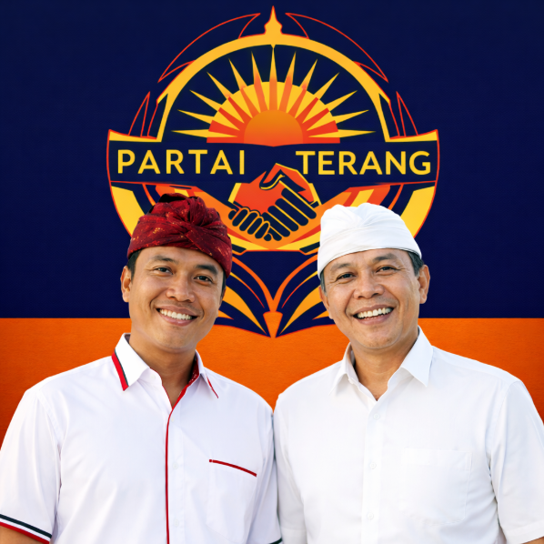

Untuk Rakyat, Oleh Rakyat, Bersama Kita Maju

"Mewujudkan daerah yang sejahtera, adil, dan berkelanjutan melalui tata kelola pemerintahan yang transparan, akuntabel, dan partisipatif untuk kesejahteraan seluruh rakyat."
Meningkatkan akses pendidikan gratis hingga jenjang menengah atas dan pelatihan keterampilan untuk semua lapisan masyarakat.
Membangun fasilitas kesehatan di seluruh wilayah dan program kesehatan preventif gratis untuk masyarakat kurang mampu.
Memberikan modal usaha, pelatihan, dan akses pasar bagi pelaku UMKM untuk meningkatkan ekonomi lokal.
Membangun dan memperbaiki jalan, jembatan, dan fasilitas air bersih untuk meningkatkan konektivitas wilayah.
Program penanaman pohon, pengelolaan sampah, dan energi terbarukan untuk lingkungan yang lebih berkelanjutan.
Memperkuat jaringan perlindungan sosial bagi lansia, anak, perempuan, dan kelompok masyarakat yang rentan.
"Beliau adalah sosok yang sangat peduli dengan masalah masyarakat. Semoga terpilih untuk membawa perubahan positif."
"Program pendidikannya sangat membantu bagi anak-anak kami. Terima kasih atas komitmen untuk masyarakat."
"Sebagai pemuda, saya senang melihat ada calon yang fokus pada pemberdayaan generasi muda. Sukses terus!"
Jl. Sam Ratulangi No. 123
Kota Jayapura, Papua
0812131234
Kandidat2@gmail.com
Senin - Jumat: 09:00 - 17:00
Sabtu: 10:00 - 15:00